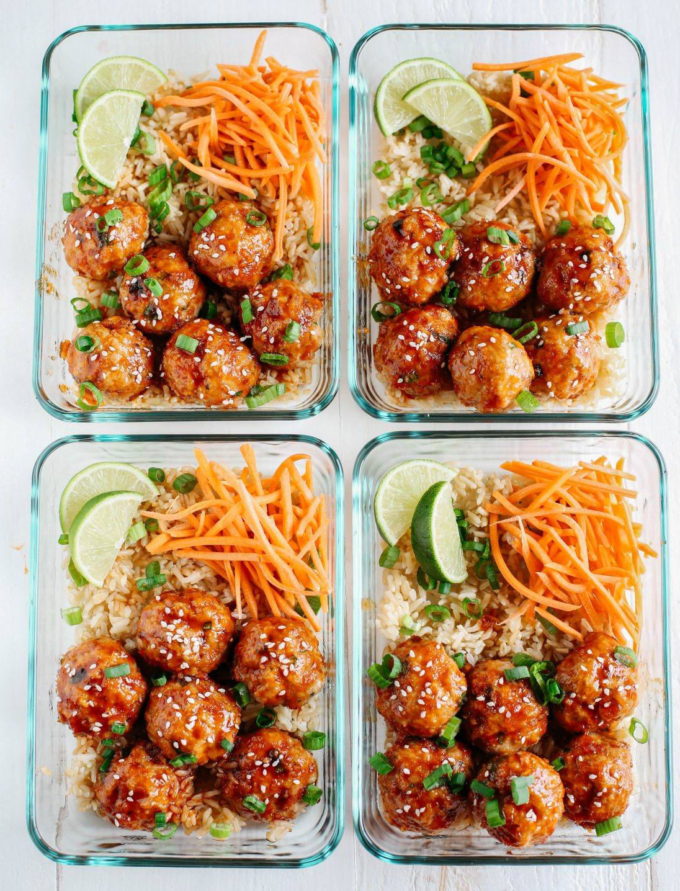

Sriracha Meatballs

Description
Flavorful turkey meatballs coated in the most delicious sweet and spicy sauce made
with a combination of sriracha, soy sauce, ginger, honey and garlic. The honey and
soy sauce in this recipe really balance out the heat perfectly, but if this sauce
is too hot for you, I recommend just cutting the sriracha in half.
Ingredients
For the meatballs:
- 2 lbs lean ground turkey
- 1 cup whole wheat panko breadcrumbs
- 2 eggs
- 1/4 green onions, chopped
- 1/2 tsp garlic powder
- 1/2 tsp salt
- 1/2 tsp black pepper
For the sauce:
- 1/4 cup Sriracha
- 3 tbsp reduced sodium soy sauce
- 3 tbsp rice vinegar
- 1 tbsp graded fresh ginger
- 3 cloves garlic, minced
- 1/2 tsp sesame oil
Instructions
-
Preheat oven to 375 degrees F.
-
In a large bowl, mix together turkey, breadcrumbs,eggs, green onion,
garlic powder, and salt/pepper until well combined. Shape mixture into
1-1/2 inch balls (makes roughly 40 balls) and place spaced apart on
prepared baking sheets lightly sprayed with cooking spray.
-
Bake meatballs for 20 to 25 minutes, or until browned and cooked through.
-
While the meatballs are baking, combine all the ingredients for the
sauce in a small saucepan and bring to a boil over medium heat, whisking
continuously. Reduce heat and simmer for 8 to 10 minutes (the sauce will
start to thicken) then toss with the meatballs.
-
Serve immediately over brown rice and top with green onions and a few
sesame seeds. Enjoy!